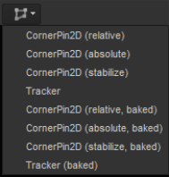

Before you can track a plane, you need to draw one using the Roto node.
You can use the PlanarTracker to track rigid objects and objects that deform slightly throughout the track. As the PlanarTracker tries to fit a plane to the object to be tracked, rigid objects obtain better track results than objects that deform.
For instance, a wall or a flat side of an object are good planes, but you can also get good results tracking faces or people. It’s also important that the plane you’re tracking has some texture and that the plane isn’t completely obscured at any point of the tracking. Tracking surfaces without texture and few features to track is not likely to produce good results.
| 1. | You can do one of the following: |
• Insert a PlanarTracker node by either selecting Transform > PlanarTracker, or by pressing tab, typing PlanarTracker, and pressing Return. This inserts a Roto node that is already in PlanarTracker mode. You can use this to draw a Bezier shape, which is automatically added as a track object. The shape's boundary appears in purple, denoting this, and the shape is automatically added to a layer called PlanarTrackLayer1 in the stroke/shape list.
OR
• Create a Roto or RotoPaint node and use it to draw a Bezier shape around the plane you want to track. Your new shape’s boundaries appear in red in the Viewer, and a Bezier shape item appears in the stroke/shape list. The shape remains as a normal roto shape until it is converted into a track object.

| 2. | If you’re drawing more than one shape, you can arrange them in the stroke/shape list to tell PlanarTracker that they are different layers. Order your shapes from closest to camera (top of the list) to furthest away (bottom of the list), and PlanarTracker automatically holds out any track layers above the current one. |
| 3. | Make sure you’re still on the same frame as you used to draw the Bezier shape. |
NOTE: When you select a frame to draw a roto shape on, that frame becomes your reference frame. When you proceed with tracking your plane it’s important that you’re always starting on the same reference frame. Move to your reference frame using the Go to Reference Frame button . In the course of the process you may decide to change your reference frame. You can do this by clicking Set Reference Frame  in the Viewer.
in the Viewer.
You can now proceed to track the plane you’ve drawn:
Depending on whether you have chosen to insert a PlanarTracker node, or a Roto (or RotoPaint) node, do one of the following:
If you have chosen to insert a PlanarTracker node:
| 1. | Use the tracking tools above the Viewer to track the Roto shape. |
| 2. | See Tracker Menu Options in the Viewer for more information. |
If you have chosen to insert a Roto or a RotoPaint node:
| 1. | Right-click the Roto shape and select one of the following options: |
• planar-track this shape - Select this to convert the roto shape into a track object that doesn't contain any tracking data (if it's not already).
• planar-track this shape (fwd) - Select this to track your shape while the track is played forwards.
• planar-track this shape (bkwd) - Select this to track your shape while the track is played backwards.
| 2. | If you selected one of the latter two options, your shape is now tracked throughout the timeline. A progress dialog is displayed while the shape is tracked. |
If you selected the first option to convert your roto shape into a track object without any tracking data, you can use the tracking tools above the Viewer to track forwards or backwards. See Tracker Menu Options in the Viewer for more information. When you select any of the options above the tracker menu tools are displayed above the Viewer.
The shape is now automatically added to a layer called PlanarTrackLayer1 in the stroke/shape list and is displayed in purple in the Viewer, signifying that it has been converted into a track object.
| 3. | In the stroke/shape list, a purple rectangle appears in the PT column next to your shape(s). You can toggle the purple rectangle on and off to revert the shape to a normal roto shape instead of a track object. |
NOTE: You can only toggle a shape between being a roto shape or a track object, after converting the Roto shape into a track object.
| 4. | Select the Tracking tab in the Roto node properties to display the tracking data, as shown below. |
You can use the tracker menu options to perform more advanced tracking. These options are only visible in the Viewer after you have converted a shape into a track object.
Before tracking an object, you can use the track motion controls to specify the type of movement that the PlanarTracker can expect. The following options are available:

• Translation - Select this so the tracker expects translation.
• Rotate - Select this so the tracker expects rotation.
• Scale - Select this so the tracker expects scaling.
• Shear - Select this so the tracker expects shearing.
• Perspective - Select this so the tracker expects changing perspective.
Use the Tracking buttons to track backwards or forwards throughout the whole footage, or if you want, select a specified frame range.

You can also track on a frame by frame basis. For example, if the plane you’re tracking is visible throughout the footage, forward tracking might be all you need. If the plane is only partially visible over a part of the footage though, it might be a good idea to first track the part with the whole plane visible, and then track the rest of the footage separately.
With the Tracking controls you can track and re-track your footage. For more information see Tracking and Stabilizing .
You can clear tracking information that you’ve already created with the clear buttons.
• clear all - clear all tracking information created by PlanarTracker.
• clear backwards - clear all tracking information backwards from the current frame.
• clear forwards - clear all tracking information forwards from the current frame.
After you have tracked your shape or shapes, you can review your results by scrubbing back and forth on the timeline. You can adjust the planar surface shape if, for example, your roto shape drifts in the course of the tracking, or you simply want to change it. To do this, you can use the planar surface controls.
• center planar surface - Select this to center the planar surface in the Viewer during playback.
• display planar surface - Select this to display the boundary of the planar surface.
• enable planar surface editing - Select this so that you can edit the planar surface by dragging the corner points in the Viewer.
• display grid - Select this to display a grid over the planar surface.
• set planar surface to image bounding box - Select this to change the planar surface to be the same as the image bounding box.
You can use the reference controls above the Viewer to either go to the current reference frame, or change the reference frame to the current frame.
You can set and remove keyframes, and go to previous or next keyframes using the keyframe controls above the Viewer.
You can use the layer dropdown to quickly select various PlanarTracker layers, or to add a new layer.
You can use the CornerPin dropdown to insert a CornerPin node. The CornerPin2D tool is designed to map the four corners of an image sequence to positions derived from tracking data. In practice, this allows you to replace any four-cornered feature with another image sequence.

The CornerPin dropdown provides you with several different kinds of CornerPin you can choose from:
• relative - to warp the image according to the relative transform between the current frame and the reference frame. The image remains unchanged in the reference frame. You can also pick the baked version of the relative CornerPin node. A baked node has the keyframe values copied from PlanarTracker, rather than having them expression linked.
• absolute - to use the to and from controls to place the image exactly within the selected plane. This may skew the image throughout the footage. This attaches and automatically sets its format to the dimensions of any currently selected node. You can also pick the baked version of the absolute CornerPin node. A baked node has the keyframe values copied from PlanarTracker, rather than having them expression linked.
• stabilize - to apply an inverse transform on the image, which effectively locks the image in its place and stabilizes it in the footage. This type of corner pinning is most useful for drift corrections and making sure your tracking results are reliable. You can also select Tracker to create a baked Tracker node for further reducing jitter. You can also pick the baked version of the stabilize CornerPin node. A baked node has the keyframe values copied from PlanarTracker, rather than having them expression linked.
• Tracker - creates a Tracker node with four tracks set to each of the tracked corner points. These tracked points give you access to the Tracker's comprehensive functions, such as track averaging and enhanced smoothing controls. See Tracking and Stabilizing for more information.
Select the Tracking tab in the Roto node's properties to access more tracking options.
| track channels | Use this dropdown to select the channel set on which you want to track. |
| image channels | Use this to select an individual channel from the channel set. You do not need to select an individual channel, and instead can leave it as none, the default. |
| pre-track filter |
Before image patches are compared, the selected filter is applied. You can select one of the following options: • none - This disables all pre-filtering, which allows you to have full control of tuning the input image for tracking. • adjust contrast - This stretches the image contrast to better suit the tracking algorithm. This option is recommended. • grayscale - This converts any input RGB channels to a grayscale image for faster processing. |
| adjust for luminance changes | If your footage changes brightness over time, either gradually or suddenly, enabling this option performs extra pre-filtering to help compensate for the changes. This may make the track slower and less accurate and therefore should only be selected when you need to handle changes in luminance. |
| clamp super-white, sub-zero footage |
Select this to clamp the tracking patch pixel values to lie between 0 and 1. NOTE: If you want to track using the full dynamic range of your super-white or sub-zero footage, disable this option. |
| hide progress bar | As it is possible to stop a track using the tools above the Viewer, you can choose to hide the progress dialog that appears when you track a shape. |
You can use the CornerPin dropdown to select the type of corner pin node you want to insert. See CornerPin Dropdown for more information about the different kinds of CornerPin. After you have selected the required type of CornerPin, you can press Create to insert it.
Select the link output checkbox to link to the PlanarTracker output so that exported nodes are updated with the track.
The CornerPin points are populated automatically when you track an object. When you draw a roto shape and convert it into a track object, Nuke automatically places 4 corner pins around the shape. These are the points that are tracked.
You can correct the four automatically placed points by offsetting any or all of the four points. To offset a point, simply click and drag it in the Viewer to the correct position.
This is the frame used as a reference to compare all other frames containing tracking data. It defaults to the first frame used to track. You can change this by entering a new frame number in the reference frame input field.
|
|